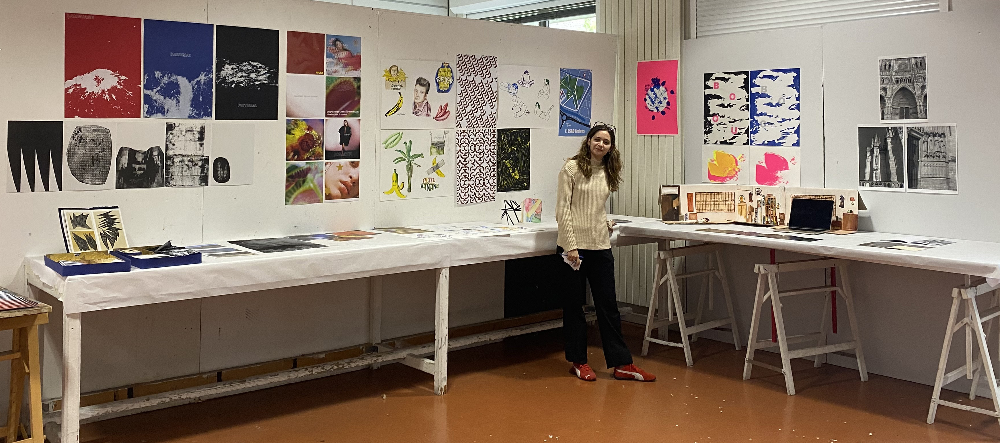

Passionnée par la création visuelle, je cherche constamment à découvrir de nouvelles techniques et à approfondir mes projets pour élargir ma pratique artistique.
RATP — Pôle communication — Stagiaire (Novembre à décembre 2021, 1 mois et demi)
→ Réseaux sociaux, shootings photos, fonds d'écran et Gifs.
VOLCAN DESIGN — Agence de marketing et branding — Stagiaire (Mai à juin 2021, 1 mois et demi)
→ Conception d'affiches, flyers, moodboards, recherches.
AL DENTE — Agence de publicité — Stagiaire (Janvier à février 2021, 1 mois)
→ Recherches et conceptions d'images pour diverses marques telles que Moët & Chandon.
MERCI HANDY — Produits cosmétiques — Stagiaire (Février à mars 2020, 3 semaines)
→ Création de contenus pour les réseaux sociaux, retouches photos sur Photoshop et Illustrator.
Photoshop
Illustrator
InDesign
After Effects
VS Code
Risographie
Sérigraphie
Reliure
Curieuse, créative, passionnée, organisée et à l'écoute.
Photographie, théâtre, musées, voyages, cinéma